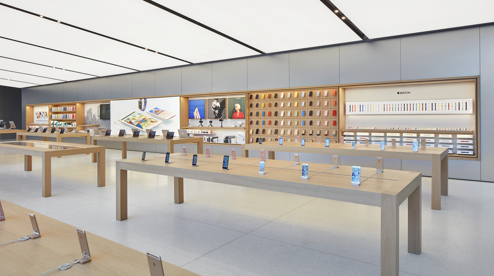

APPLE

Apple Inc. is an American multinational technology company that specializes in consumer electronics, software and online services headquartered in Cupertino, California, United States. Apple is the largest information technology company by revenue (totaling US$365.8 billion in 2021) and as of May 2022, it is the world's second most valuable company, the fourth-largest personal computer vendor by unit sales and second-largest mobile phone manufacturer. It is one of the Big Five American information technology companies, alongside Alphabet, Amazon, Meta, and Microsoft.
Apple was founded as Apple Computer Company on April 1, 1976, by Steve Jobs, Steve Wozniak and Ronald Wayne to develop and sell Wozniak's Apple I personal computer. It was incorporated by Jobs and Wozniak as Apple Computer, Inc. in 1977 and the company's next computer, the Apple II became a best seller. Apple went public in 1980, to instant financial success. The company developed computers featuring innovative graphical user interfaces, including the original Macintosh, announced in a critically acclaimed advertisement, "1984", directed by Ridley Scott. By 1985, the high cost of its products and power struggles between executives caused problems. Wozniak stepped back from Apple amicably, while Jobs resigned to found NeXT, taking some Apple employees with him.
As the market for personal computers expanded and evolved throughout the 1990s, Apple lost considerable market share to the lower-priced duopoly of the Microsoft Windows operating system on Intel-powered PC clones (also known as "Wintel"). In 1997, weeks away from bankruptcy, the company bought NeXT to resolve Apple's unsuccessful operating system strategy and entice Jobs back to the company. Over the next decade, Jobs guided Apple back to profitability through a number of tactics including introducing the iMac, iPod, iPhone and iPad to critical acclaim, launching memorable advertising campaigns, opening the Apple Store retail chain, and acquiring numerous companies to broaden the company's product portfolio. When Jobs resigned in 2011 for health reasons, and died two months later, he was succeeded as CEO by Tim Cook.
Find apple store at Pine city mall
Contact: (00)2204056845